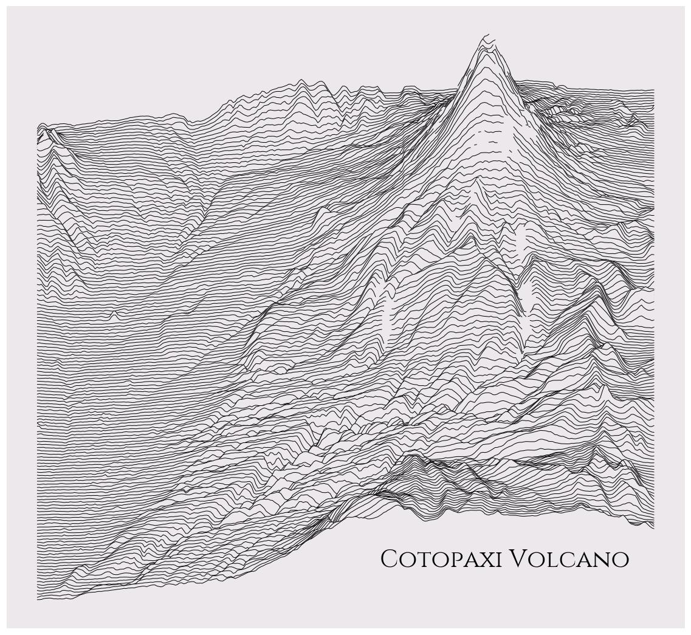
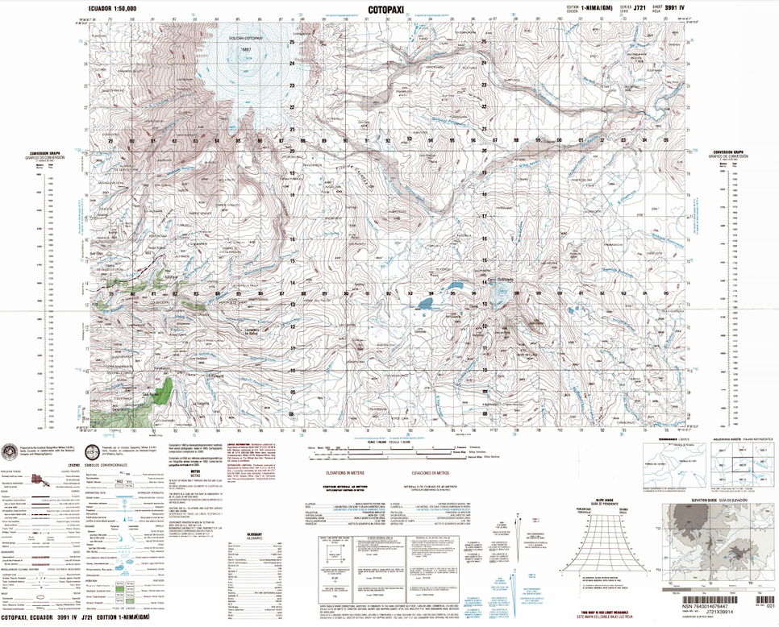
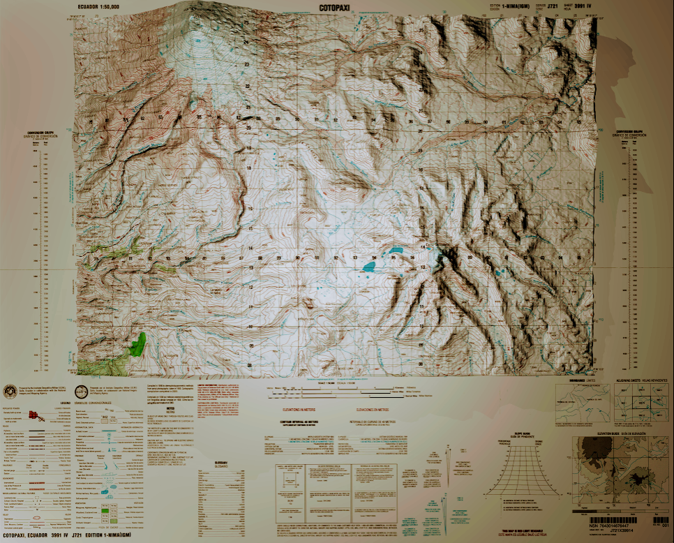
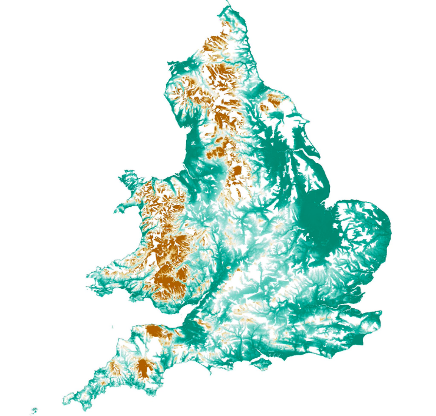
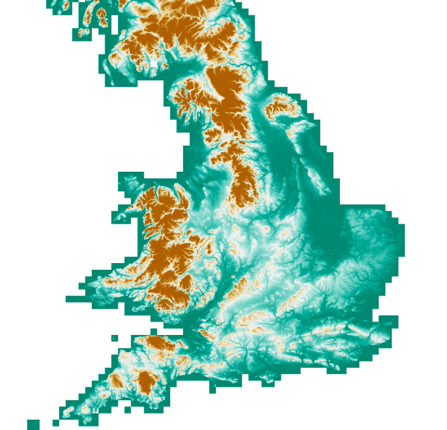

Latest news¶
A ridge map of Cotopaxi volcano¶
This is Ecuador's tallest active volcano Cotopaxi on a ridge map. Map via ridge_map from @colindcarroll such an amazing tool!

Plotting global surface water¶
I combined Google Earth Engine, OpenStreetMap and Mapbox to plot global surface water
- Yellow outline is water derived from OpenStreetmMap
- Grid is Water Occurrence derived from Landsat (Pekel et al., 2016)
Realistic 3D Cotopaxi volcano¶
An old topographic map from my country brought to life. The Cotopaxi volcano with a peak of 5897 m in Ecuador. View larger https://photos.app.goo.gl/de9yeaB3YFzrTF9C9 Thanks to @jscarto for the tips.
| Original Cotopaxi map | Blender3D Cotopaxi |
|---|---|
|  |  |
Void-filled LIDAR for England¶
Filling voids in LIDAR data using OS Terrain 50, handling/interpolating ~150 million cells!
| Original LIDAR | Void-filled LIDAR |
|---|---|
|  |  |